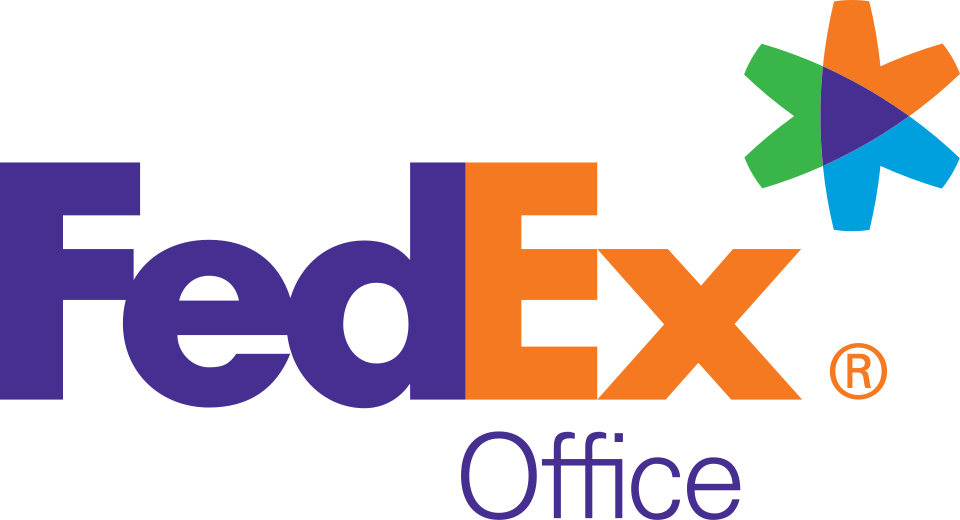

홈 > 브랜드 매거진 > FedEx Office
FedEx Office
페덱스 오피스(FedEx Office)는 복사·인쇄·문서·배송 서비스를 제공하는 페덱스 산하 미국 소매 체인으로, 구 Kinko's이다.
산업 분야 리테일·커머스 · 공개 등급 자료 기반 · 브랜드 평가 4.1 ★

한눈에 보는 브랜드
브랜드 관점
이 브랜드의 핵심은 '인쇄'와 '배송'을 한 매장 안에서 묶었다는 점이다. 경쟁사 더 유피에스 스토어가 가맹점(프랜차이즈) 모델인 반면, 페덱스 오피스는 전 매장을 본사가 직접 소유·운영해 서비스 품질과 가격을 일관되게 통제한다.
단순 복사점을 넘어 직장인·소상공인을 겨냥한 종합 오피스 허브로 위치를 재설정했고, 인쇄 주문이 그대로 페덱스 물류망을 타고 전국으로 흩어지는 '분산 인쇄' 구조가 차별점이다. 한국 독자에게는 동네 복사·출력집과 택배 영업점, 사무용품점이 한 지붕 아래 합쳐진 형태로 이해하면 가깝다.
디지털 인쇄·직접우편(DM)·기업 온사이트 인쇄까지 확장하며, 이커머스 시대의 오프라인 인쇄 수요를 흡수하는 전략으로 시장 함의가 크다.
시작과 성장
1970년은 미국 대학가에서 복사 수요가 폭발하던 시기였다. 폴 오팔리아는 학생들이 도서관 복사기 앞에 줄 서는 모습에서 기회를 보고, 부모가 공동 보증한 5천 달러 대출로 햄버거 가게 옆 약 9제곱미터 남짓한 공간을 월 100달러에 빌려 첫 매장을 열었다.
곱슬한 붉은 머리 별명에서 따온 '킨코스'라는 이름으로 공책·필기구와 장당 4센트 복사 서비스를 팔았다. 프랜차이즈 대신 지역 공동 소유주와의 파트너십 방식으로 10년 만에 전국 80여 개 매장으로 늘었고, 이후 1,200개 거점과 직원 2만 3천여 명, 10개국으로 확장했다.
첫 전환점은 2004년 2월 페덱스의 약 24억 달러 인수로, 'FedEx Kinko's'라는 합성 브랜드와 다색 아이콘이 도입됐다. 두 번째 전환점은 2008년 6월 'FedEx Office'로의 개명으로, 복사점을 넘어선 폭넓은 서비스 범위를 이름에 담았다.
브랜드 아이덴티티
브랜드 가치는 속도·정확성·일관된 품질이며, 모기업 페덱스의 신뢰 자산을 그대로 빌려 쓴다. 비주얼 아이덴티티는 오렌지·퍼플 조합의 그 유명한 'FedEx' 로고타입을 공유하되, 'Ex' 글자를 파란색으로 처리해 배송 부문(오렌지)과 인쇄·오피스 부문을 색으로 구분한다.
글자 사이 음각의 흰 화살표가 추진력과 정밀함을 상징한다. 타깃은 출력·발송·포장이 잦은 직장인, 소상공인, 출장·행사 준비자이며, 보이스는 실용적이고 효율 중심이다.
플라노(텍사스) 본사 캠퍼스의 대형 모자이크 작품처럼 정제된 기업 이미지를 지향한다.
제품과 서비스
핵심 서비스는 셀프·풀서비스 복사와 흑백·컬러 출력, 제본·마감, 스캔·팩스다. 여기에 페덱스 익스프레스·그라운드 배송 접수, 포장 지원과 포장재 판매, 여권 사진 촬영, 와이파이를 더한다.
기업 대상으로는 상업용 대량 인쇄, 직접우편(DM), 사이니지·판촉물, 차량 그래픽, 온사이트 인쇄·우편실 운영까지 제공한다. 채널은 전국 매장과 온라인 주문, 모바일 업로드를 결합한 옴니채널 방식이다.
현재 상태
타임라인
정리된 연도형 이벤트가 없습니다.
BI/CI 변천사
함께 읽을 브랜드
 리테일·커머스 · 자료 기반Office 1 Superstore
리테일·커머스 · 자료 기반Office 1 Superstore오피스 원 슈퍼스토어(Office 1 Superstore)는 마스터 프랜차이즈 방식으로 운영되는 국제 사무용품 소매 프랜차이즈다.
 리테일·커머스 · 디렉토리무신사
리테일·커머스 · 디렉토리무신사무신사는 한국 패션 플랫폼 브랜드입니다. 온라인 패션 커머스, 브랜드 입점, 자체 콘텐츠, 오프라인 스토어를 통해 국내 디자이너 브랜드와 젊은 소비자를 연결합니다.
 리테일·커머스 · 매거진 완성유니클로
리테일·커머스 · 매거진 완성유니클로유니클로는 패션을 유행의 장식이 아니라 생활을 구성하는 공산품처럼 다룬다. 브랜드의 힘은 화려한 스타일보다 베이직, 품질, 가격, 운영 시스템을 일관되게 정렬하는 데...
 리테일·커머스 · 자료 기반Van Leest
리테일·커머스 · 자료 기반Van LeestVan Leest는 네덜란드의 리테일·커머스 브랜드로, 상품 큐레이션, 가격 체계, 매장·온라인 유통, 구매 편의성이 브랜드 인식을 좌우하는 영역입니다.
아마존은 쇼핑몰보다 고객의 기다림과 탐색 비용을 줄이는 시스템 브랜드에 가깝다. 상품 범위, 검색, 추천, 배송, 결제 경험이 하나로 연결되면서 브랜드의 가치는 편리...
Ay
Ayoh!
리테일·커머스 · 편집 검수Ayoh!Ayoh!는 2024년에 기록된 Shoppy Shop Brands 계열의 브랜드 아이덴티티 사례입니다. Center가 아이덴티티 작업의 디자이너로 기록되어 있습니다....
Be
Best of the Bone
리테일·커머스 · 편집 검수Best of the BoneBest of the Bone는 2025년에 기록된 Shoppy Shop Brands 계열의 브랜드 아이덴티티 사례입니다. Universal Favourite가 아이...
Ch
Chilly Willy
리테일·커머스 · 편집 검수Chilly WillyChilly Willy는 2025년에 기록된 Shoppy Shop Brands 계열의 브랜드 아이덴티티 사례입니다. The Young Jerks가 아이덴티티 작업의...